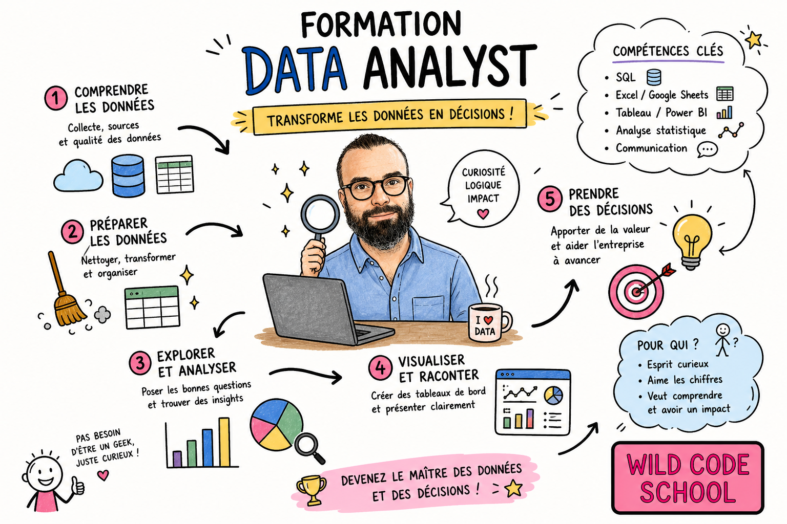

Voici le lien de la Wild Code School
Wild Code SchoolVoici notre Crew de la Wild Code School
Les Verts !Bienvenue sur ma page d'initiation au HTML et CSS dans le cadre de ma formation Data Analyst pour valider un titre RNCP de niveau 6, équivalent a un BAC + 3/4 avec la Wild Code School. Je vais présenter rapidement où j'en suis niveau compétences, apprentissage et pourquoi avoir choisis la Data.
Après un peu plus de deux mois de formation, le programme est riche et intense. Mais j'intègre petit à petit les notions. En voici les principales :
- Python avec un focus sur Pandas
- Power BI et Dataviz
- SQL
- Méthode Agile et Scrum via les projets de groupe
- HTML et CSS où l'on débute !
En ce qui concerne l'apprentissage, il se fait petit à petit avec beaucoup d'efforts et de persévérance. Certaines notions sont plus difficiles à intégrer que d'autres, par exemple le Machine Learning est tout nouveau pour moi et demande une concentration particulièrement forte. Pour l'analyse de donnée ainsi que sa préparation, il a fallu apprendre les concepts et l'idée générale qui consiste a bien nettoyer les données pour avoir une base de donnée propre et claire pour que notre analyse qui en découle soit la plus pertinente possible. Enfin, pour le côté visuel, esthétique avec Power BI et même la gestion des Power Point en groupe de projet je m'amuse vraiment à préparer quelque chose d'agréable à regarder pour l'auditoire et j'avoue que ça me plait particulièrement.
Merci et à bientot !